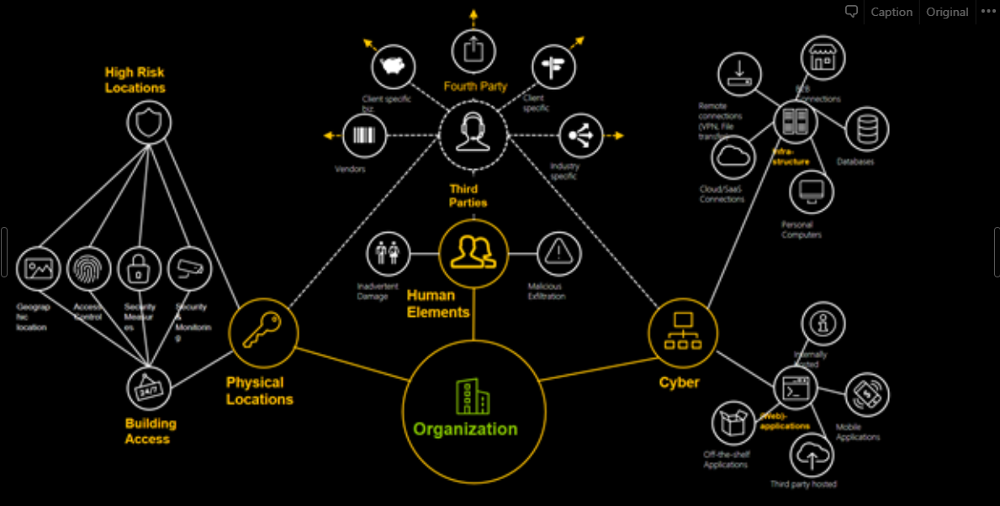

Understanding Red Team Assessments
Red Team Objectives
The key objective of the exercise would be to simulate real threats designed to leverage weaknesses in people, process and technology to compromise the target environment. This would typically include the following areas:
- Intelligence gathering and reconnaissance
- Social engineering, including phishing techniques, use of safe malware infected IOT devices, and physical penetration testing
- Wireless and network penetration testing of internal and external systems
- Enterprise application assessments to determine whether weaknesses in applications may provide opportunities to gain unauthorized access to information and / or resources

The ongoing information security breaches at companies worldwide have shown that once perimeter defenses are breached, the company’s crown jewels can be obtained. For organizations, those crown jewels support critical business value chains, and involve, among others, customer and employee data, information, sensitive and restricted data such as IPs, deployment blueprints across automobile sector clients etc.
Red team goal is to simulate a realistic Cyber Attack (both physical and logical) in a controlled manner and provide an evaluation on its defensive and Incident Response capabilities. Examples of such actions include “exfiltration of PII”.
Methodology
Using the Tools, Techniques and Process of real-world attackers, red teamers will prepare a targeted attack to deliver sophisticated implant software into Corp’s infrastructure and achieve access to the defined targets.
In addition, confidentiality of the Corp’s data and findings is a top priority, the key rules of engagement which will be defined to include:
- Approved attack types
- Target employees approved and off limits
- Reporting processes while attacks are being performed
- Approvals required in order to move to the next step when access is achieved
- Emergency Contact information
- Secure folder where all the data would be stored
With this approach towards the penetration testing exercises, organizations can verify that existing and new applications, systems and networks are not vulnerable to security risks that could allow unauthorized access to the company resources. It examines a system’s immunity to actual hacking methodologies and gives an excellent idea of the system’s exploitable vulnerabilities.
Hacking is not a technique but a “thought process”, and hence the importance of conducting a simulated exercise of penetration testing periodically to counter the growing threat to organizational resources.
Goals of Red Team Assessments
Assets of Value or Concern
Assets in this class are valuable, but take some additional effort to create a higher risk scenario, or are not the core of the business.
“Game Over” Situations
Goals achieved with this classification or assets taken are automatic critical situations for the client. This includes Domain / Enterprise Administrator on windows networks, control of core business operations, or whatever the client considers a critical asset.
End Game
There are several routes attackers can take to get to an End Game scenario, in which the worst possible damage has been done for the determined goals. However, determining when to call that end game has been reached is debatable based on client specifics. For example, some clients only want to see it done then take the time to rearchitect their environment, and others want to see as many ways to achieve this status as possible. In the event that the client chooses the latter, the decision must be made on whether or not the client wants to “take the hit” and convert the red team into a more whitebox approach. Since the attackers already have knowledge of how the network works, and have already compromised assets, this would mean leaving access to these assets open such that the assessment team can look at other issues that may not have been previously identified, or other routes to achieve the level of access.
Each phase will represent a unique set of objectives for Acme Corp’s security team and we will evaluate the organization on each of these objectives. We find each phase to be highly valuable for Acme Corp, as the business and technical stakeholders will learn more on the mindset of an attacker and more importantly how to prepare, detect and respond to such an attack.